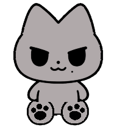
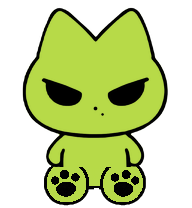
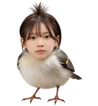

01
Windows · macOS · v1.0.0
欢迎进入
Yuniverse
JUST 大猫、外星猫和珉鸟住进同一个桌面。它们会看向你的鼠标、走来陪你，在安静时坐下休息。
无需 Codex · 本地运行 · 三位成员随时切换
JUST 大猫

外星猫

珉鸟

三种形态
一个 Yuniverse
一个 Yuniverse
跟随鼠标✦自动陪伴✦安静入睡✦五档大小✦离线运行✦
跟随鼠标✦自动陪伴✦安静入睡✦五档大小✦离线运行✦
Meet the residents
今天让谁陪你？
保留各自最有辨识度的神态，也让动作更贴合它们自己的身体。
02
外星猫
03
珉鸟
Made for your desktop
它不是贴图，
它在回应你
看向光标
光标移动时自然转头，抬头与低头都有连续方向变化。
走来陪你
光标停下或开始打字后，它会走到光标所在的竖直线上，并避开屏幕边缘。
懂得休息
工作时坐下陪伴；键鼠长时间没有输入，才会进入睡眠并保持安静。
大小刚刚好
五档比例可选，从更轻巧到更醒目，适配不同尺寸与缩放的屏幕。
Current release
把 Yuniverse
带回桌面
选择与你电脑一致的系统与处理器。浏览器会自动下载并校验分片，再合成为一个完整的 Windows 安装程序或 macOS 磁盘映像。
Windows 10 / 11
x86_64
151.0 MiB
正式版1.0.0
点击后请保持本页打开，完成时浏览器会弹出保存。
SHA-256
7689effe2ff151b03da77b4f938aef1968c0f32b203f681ab49eb549e5f3e853
若系统显示来源或开发者提示，请先核对上方哈希值，再决定是否继续安装。
分片下载遇到问题时，可前往 GitHub Release 获取安装版或便携版。
01
为什么叫 Yuniverse？
“Yu” 对应柳智敏韩文名字中的音节，再与 Universe 相连——不同的衍生形象，在同一个小宇宙相遇。
02
它会上传数据吗？
不会。桌宠在本机离线运行；键鼠信息只用于判断动作状态，不会上传到网站。
03
支持哪些电脑？
当前提供 Windows x86_64、Windows ARM64、macOS ARM64 与 macOS x86_64 四种 64 位版本。